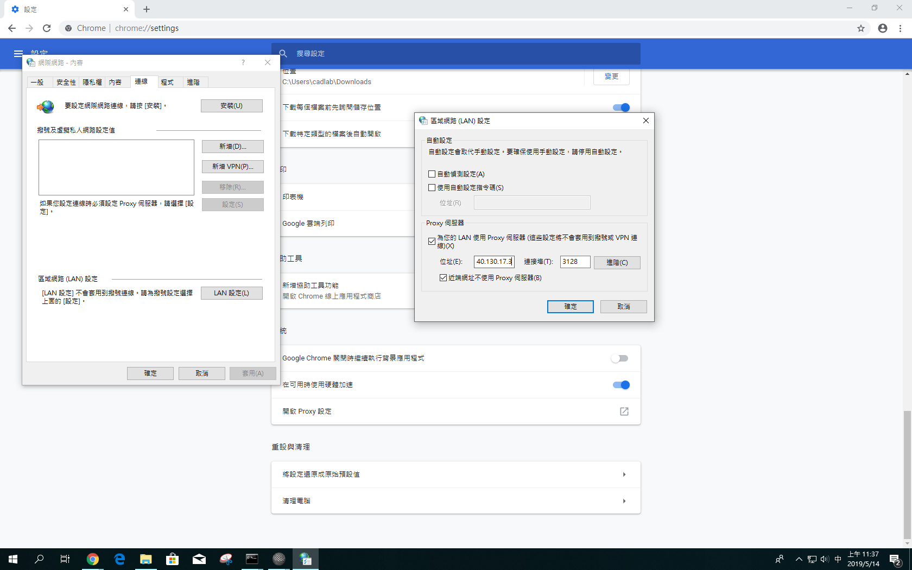

近端配置及管理 << Previous Next >> 隨身系統
近端配置及管理 << Previous Next >> 隨身系統
網路連線設定
遇無法順利上網應依序以下設定是否無誤；若還是不能發現獲解決問題，請立即舉手向老師詢問/求助於同組同學。
- 檢查網路線是否連接正常
- Windows Network Setting
大部分情況下，在BGA0810教室皆是透過 IPv4 協定下的 DHCP 與 NAT 上網，且使用 192.168.1.* 的網路位址。

- Chrome Proxy
然後以 NAT 的一組外部 IP 上網, 通常必須設定 Proxy Server 為 http://proxy.kmol.info:3128 後上網會比較順暢，但第十三周為特殊情況僅剩下140.130.17.3可用。

近端配置及管理 << Previous Next >> 隨身系統